12 מבוא לפונקציות
12.1 מושג הפונקציה
הגדרה 12.1.1.
פונקציה מ-\(A\) ל-\(B\) היא העתקה שמתאימה לכל איבר ב-\(A\), איבר ב-\(B\).
נסמן \(f : A \to B\), ל-\(A\) נקרא התחום שלה, ל-\(B\) נקרא הטווח שלה.
דוגמאות:
הפונקציה \(f : \mathbb{R} \setminus \{1\} \to \mathbb{R}\) היא \(f(x) = \frac{x + 3}{x - 1}\)
(התחום, הטווח)
הפונקציה \(f(x) = \lfloor x \rfloor\) שנקראת פונקציית הערך השלם,
מקיימת \(f : \mathbb{R} \to \mathbb{R}\) שניתן לכתוב גם כך: \(f : \mathbb{R} \to \mathbb{Z}\)
הגדרה 12.1.2.
התמונה של \(f : A \to B\) מוגדרת על ידי:
\[I_m(f) = (\{f(x) | x \in A\} = \{y \in B | f(x) = y\] עבור \(x \in A\) קיים \(\}\)
כלומר, \(I_m(f)\) היא קבוצת כל המספרים ש-\(f\) מניעה אליהם.
תמיד מתקיים: \(I_m(f) \subseteq B\)
דוגמה 12.1.3.
\(f : \mathbb{R} \to \mathbb{R}\) שנתונה על ידי \(f(x) = x^2\), לכן \(I_m(f) = [0, \infty)\)
(כל המספרים אינם שליליים)
חיבור
אם \(f, g : R \to R\), אז הפונקציה \(f + g\) מוגדרת ע”י \((f + g)(x) = f(x) + g(x)\)
חיסור
אם \(f, g : R \to R\), אז הפונקציה \(f - g\) מוגדרת ע”י \((f - g)(x) = f(x) - g(x)\)
כפל
אם \(f, g : R \to R\), אז הפונקציה \(f \cdot g\) מוגדרת ע”י \((f \cdot g)(x) = f(x) \cdot g(x)\)
חילוק
אם \(f, g : R \to R\), אז הפונקציה \(\frac{f}{g}\) מוגדרת ע”י \((\frac{f}{g})(x) = \frac{f(x)}{g(x)}\), \(g(x) \neq 0\)
12.2 תחום, טווח ותמונה של פונקציה
תחום, טווח ותמונה נדונים בחלקם בסעיף ״מושג הפונקציה״ לעיל. להשלמה ולסידור.
12.3 גרפים
תוכן בהכנה — להשלמה.
12.4 תכונות של פונקציות: מונוטוניות
פונקציה מונוטונית עולה- לכל \(x,y \in A\), אם \(x \leq y\) אז \(f(x) \leq f(y)\)
פונקציה מונוטונית יורדת- לכל \(x,y \in A\), אם \(x \leq y\) אז \(f(x) \geq f(y)\)
פונקצייה נקראת מונוטונית עולה ממש, אם לכל \(x < y\), מתקיים \(f(x) < f(y)\)
לדוגמא:
\(f(x) = x^2\), \(f : R \to R\), לא מונוטונית כי \(f(-1) > f(0)\) וגם \(f(0) < f(1)\)
לעומת זאת, בתחום \([0,\infty)\) הפונקציה מונוטונית עולה, כי \(x \leq y\) ולכן \(f(x) = x^2 \leq y^2 = f(y)\)
ובתחום \((-\infty,0]\) הפונקציה מונוטונית יורדת, כי \(y \leq x \leq 0\) ולכן \(f(x) = x^2 \leq y^2 = f(y)\)
תרשים: גרף הפרבולה \(f(x)=x^2\) עם נקודה \(x\) על ציר \(X\) והערך \(f(x)\) המתאים
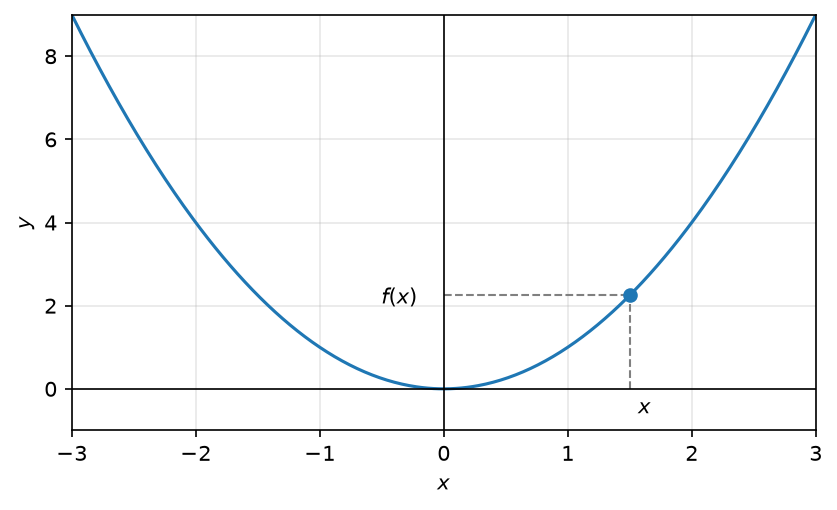
דוגמא נוספת:
תרשים: גרף פונקציית הערך השלם \(f(x)=\lfloor x \rfloor\) (פונקציית מדרגות) עם הנקודות \(x_1, x_2\)
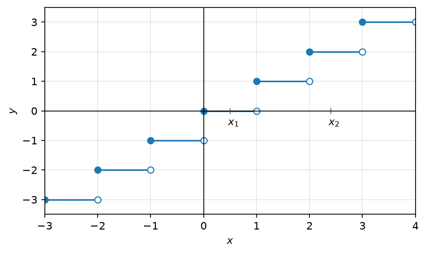
הפונקציה מונוטונית עולה, אבל היא לא חד חד ערכית.
\[0 = f(\tfrac{1}{2}) = f(\tfrac{3}{4}) = 0\]
לכל \(x_1, x_2 \in A\), אם \(x_1 \neq x_2\) אז \(f(x_1) \neq f(x_2)\)
לדוגמא:
\(f(x) = x^2\) בתחום \((-\infty, 0)\) היא חד חד ערכית.
תרשים: גרף \(f(x)=x^2\) עם נקודה \(x\) שלילית על ציר \(X\) והערך \(f(x)\) המתאים
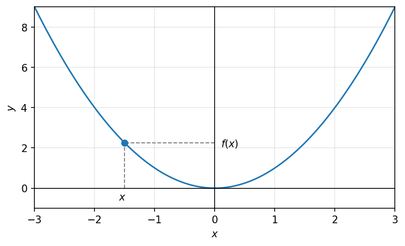
\(f(x) = x^2\) בתחום ב-\(\mathbb{R}\) היא לא חד חד ערכית.
תרשים: גרף \(f(x)=x^2\) עם הנקודות \(-x\) ו-\(x\) בעלות אותו ערך \(f(x)\)
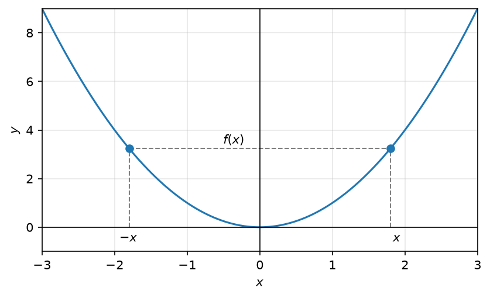
12.5 פונקציות זוגיות ואי-זוגיות
פונקציה תיקרא זוגית, אם לכל \(x \in A\) מתקיים \(f(x) = f(-x)\)
לדוגמא:
תרשים: גרף הפונקציה הזוגית \(f(x)=x^2\) - הנקודות \(-x\) ו-\(x\) בעלות אותו גובה
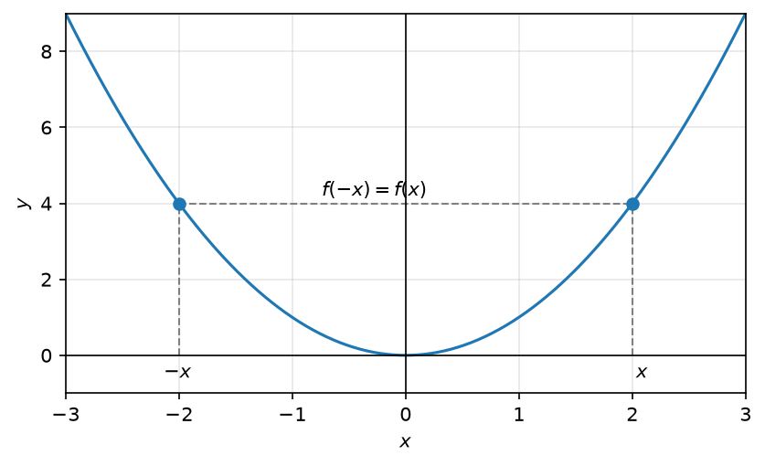
פונקציה תיקרא אי זוגית, אם לכל \(x \in A\) מתקיים \(f(-x) = -f(x)\)
לדוגמא:
תרשים: גרף הפונקציה האי-זוגית \(f(x)=x^3\) - הנקודות \(-x\) ו-\(x\) בעלות ערכים נגדיים
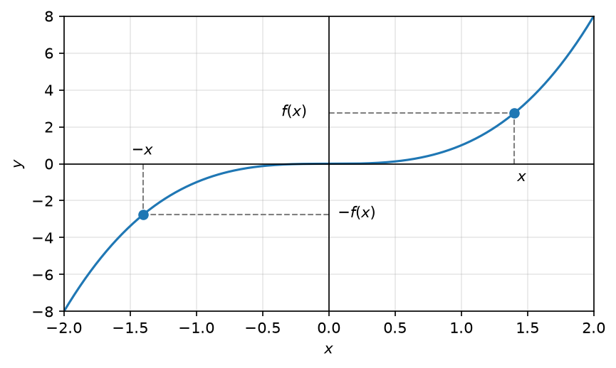
* דוגמא לפונקציה שהיא לא זוגית ולא אי זוגית: \(f(x) = x + 1\)
תרשים: גרף הישר \(f(x)=x+1\)
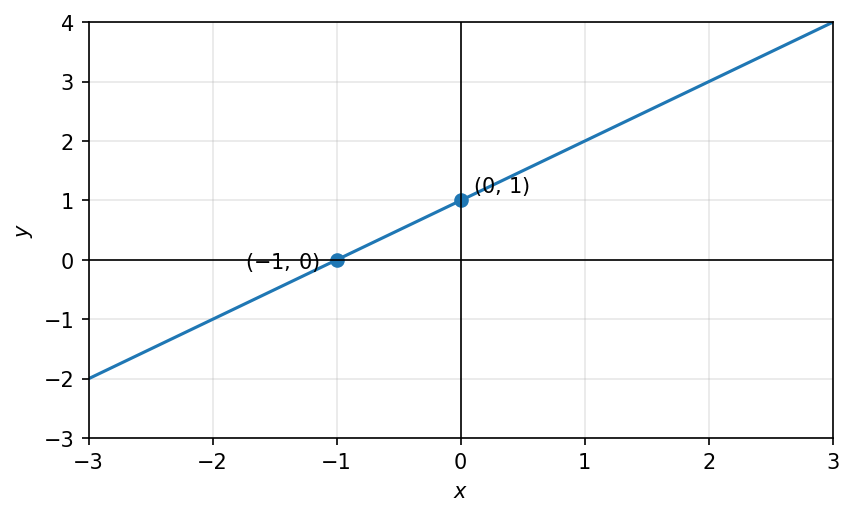
12.6 פונקציות מחזוריות
פונקציה \(f : R \to R\) תיקרא מחזורית, עם מחזור \(0 < T\) אם \(f(x) = f(x + T)\) לכל \(x \in R\).
דוגמאות:
תרשים: גרף \(f(x)=\sin x\) עם נקודת מקסימום \((\frac{\pi}{2},1)\) ונקודת מינימום \((\frac{3\pi}{2},-1)\)
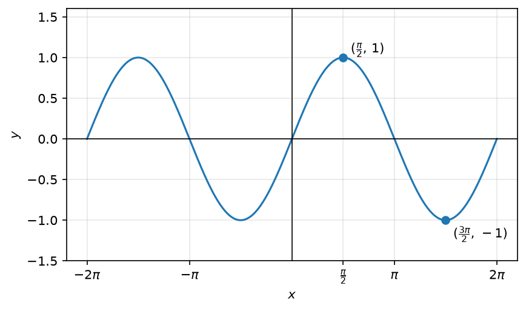
הפונקציה \(\sin(x)\) מונוטונית עולה וחד חד ערכית בתחום \([-\frac{\pi}{2}, \frac{\pi}{2}]\)
הפונקציה \(\sin(x)\) לא חד חד ערכית בתחום \([0, \pi]\)
הפונקציה \(\sin(x)\) מחזורית עם מחזור \(2\pi\)
תרשים: גרף \(f(x)=\cos x\) עם נקודת מקסימום \((0,1)\) ונקודת מינימום \((\pi,-1)\)
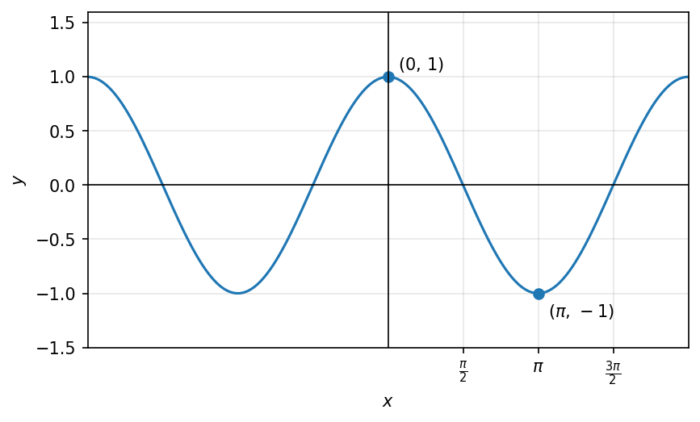
הפונקציה \(\cos(x)\) מונוטונית יורדת וחד חד ערכית בתחום \([0, \pi]\)
הפונקציה \(\cos(x)\) לא חד חד ערכית בתחום \([-\frac{\pi}{2}, \frac{\pi}{2}]\)
הפונקציה \(\cos(x)\) מחזורית עם מחזור \(2\pi\)
12.7 הרכבת פונקציות
הרכבת פונקציות
\[(f \circ g)(x) = f(g(x)) \qquad \{f \circ g : R \setminus \{0\} \to R\}\]
לדוגמא: \(f(x) = x^2\) , \(g(x) = \ln(x)\)
\[(f \circ g)(x) = f(g(x)) = f(\ln x)^2 = \underline{(\ln x)^2}\] \[(g \circ f)(x) = g(f(x)) = g(x^2) = \underline{\ln(x^2)}\]
12.8 פונקציות הפוכות
פונקציה הפיכה והופכית
- הפונקציה \(f : A \to B\) נקראת הפיכה, אם \(f\) חח”ע והתמונה שלה היא \(B\). אם \(f\) הפיכה, אז קיימת הופכית לה \(f^{-1} : B \to A\)
\[f(x) = y \longleftrightarrow x = f^{-1}(y)\]
- \[f'(f(x)) = x \quad \text{לכל } x \in A\] \[f(f^{-1}(y)) = y \quad \text{לכל } y \in B\]
פונקציות הפוכות מוכרות
פונקציה \(\sqrt{x} : [0, \infty) \to [0, \infty)\)
ההופכית \(x^2 : [0, \infty) \to [0, \infty)\)
פונקציה \(\sin(x) : \left[-\dfrac{\pi}{2}, \dfrac{\pi}{2}\right] \to [-1, 1]\)
ההופכית \(\arcsin(x) : [-1, 1] \to \left[-\dfrac{\pi}{2}, \dfrac{\pi}{2}\right]\)
תרשים: גרף \(\sin(x)\) על \(\left[-\frac{\pi}{2}, \frac{\pi}{2}\right]\) והופכיתו \(\arcsin(x)\) על \([-1,1]\)
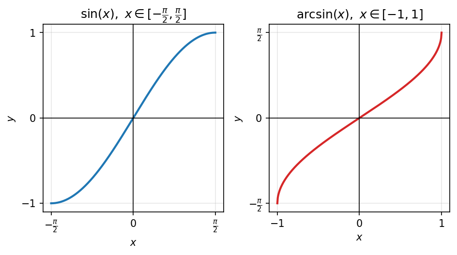
פונקציה \(\tan(x) : \left(-\dfrac{\pi}{2}, \dfrac{\pi}{2}\right) \to R\)
ההופכית \(\arctan(x) : R \to \left(-\dfrac{\pi}{2}, \dfrac{\pi}{2}\right)\)
תרשים: גרף \(\tan(x)\) עם אסימפטוטות אנכיות, והופכיתו \(\arctan(x)\) עם אסימפטוטות אופקיות ב-\(\pm\frac{\pi}{2}\)
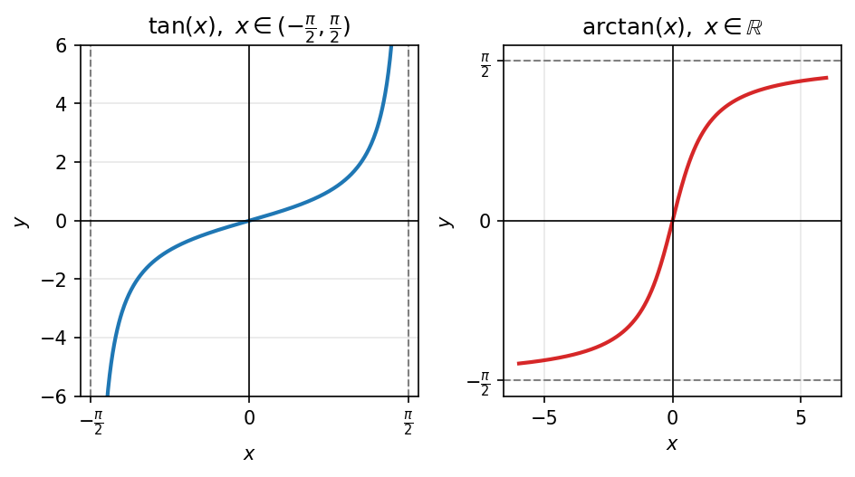
פונקציה \(f(x) = e^x\)
ההופכית \(f(x)^{-1} = \ln(x)\)